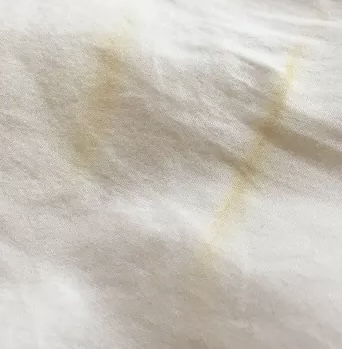

Troubleshooting
Ghosting, overcooking, undercooking, or using the wrong pressure, are the most common issues you will have when learning to sublimate.
Ghosting
Make sure that you are using heat resistant tape to hold your design in place while heating.
Ghosting is what happens when air gets between your printed design and your chosen sublimation blank.
If your design lifts or shifts while being heated it will cause ghosting.

Undercooking, Overcooking, or Wrong Pressure?


